Why I Started
My interest in TSMC began through my regular investment in SMH, the semiconductor ETF. Looking more closely at its holdings led me to a question: how could a company benefiting from AI demand appear to trade at a forward earnings multiple of around 20 times?
That initially looked inexpensive to me. But an earnings multiple depends on forecasts, and strong earnings growth does not automatically produce strong free cash flow.
I wanted to understand what sits behind the headline numbers: the technology, capital investment, operating margins, and expectations required to sustain growth. Building a DCF from scratch gave me a way to turn that curiosity into assumptions I could examine.
This journal records that process. It includes a functioning valuation framework, alongside the decisions and limitations I still need to resolve.
Timing matters: this entry was written in October 2026, but Version 1 uses a historical valuation date of February 27, 2026. Later developments provide context for my interest; they are not inputs to the historical valuation.
The approximately 20× forward multiple describes the observation that prompted this research, not a current quote or an input to this historical DCF. See the dated source note.
The Model at a Glance
The workbook contains historical financial data for 2023–2025 and forecasts for 2026–2030. Financial amounts are in TWD millions, share counts are in millions, and per-share values refer to Taiwan-listed ordinary shares, not ADR units.
| Metric | V1 model output |
|---|---|
| WACC | 8.01% |
| Terminal growth rate | 3.00% |
| Terminal ROIC | 15.00% |
| Operating enterprise value | TWD 49,983,367.48 million |
| Common equity value | TWD 51,744,181.53 million |
| Implied value per ordinary share | TWD 1,995.34 |
| Reference price: February 26, 2026 | TWD 1,995.00 |
| Implied upside / downside | +0.02% |
| Present value of terminal value / enterprise value | 85.30% |
The resemblance between the model value and the reference price does not establish that the shares were fairly valued. Several material assumptions remain unverified, and small changes produce substantially different results.

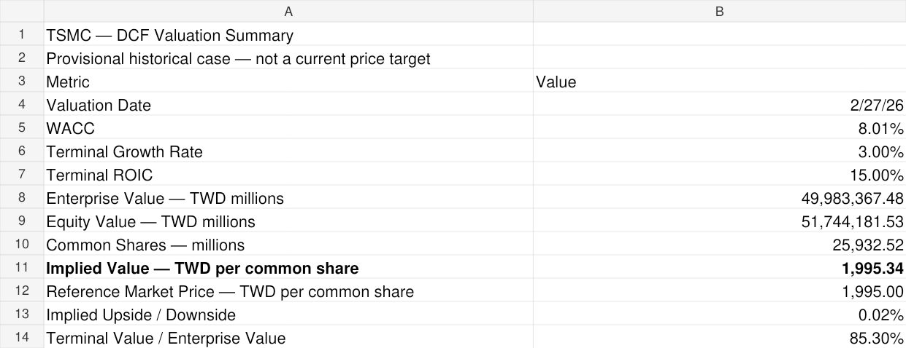
Building a Traceable Historical Foundation
I extracted selected income statement, balance sheet, and cash-flow items from TSMC’s official consolidated financial statements. The 2025 statements provide 2025 and 2024 comparisons; the 2024 statements provide the 2023 figures.
The original statements report most financial amounts in TWD thousands. I converted them to TWD millions and recorded document locations and source links.
I also built checks for the accounting equation and the reconciliation of calculated EBIT to reported operating income.
EBIT Margin = EBIT / Revenue
This is a valuation dataset, rather than a complete integrated three-statement model.

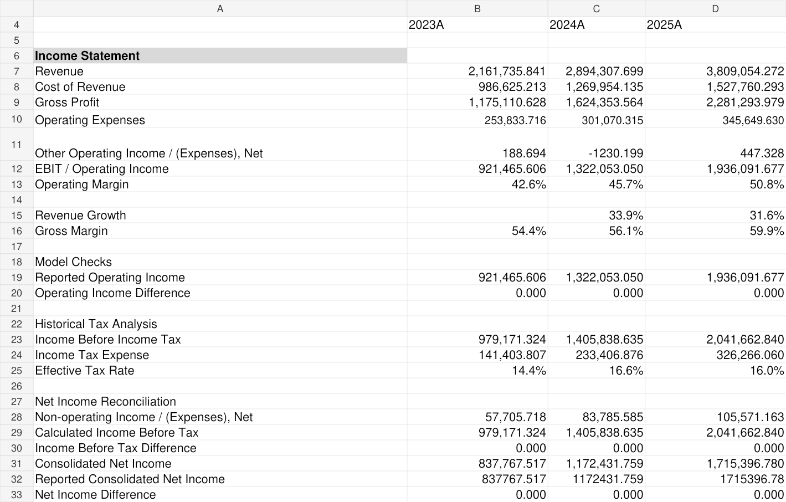

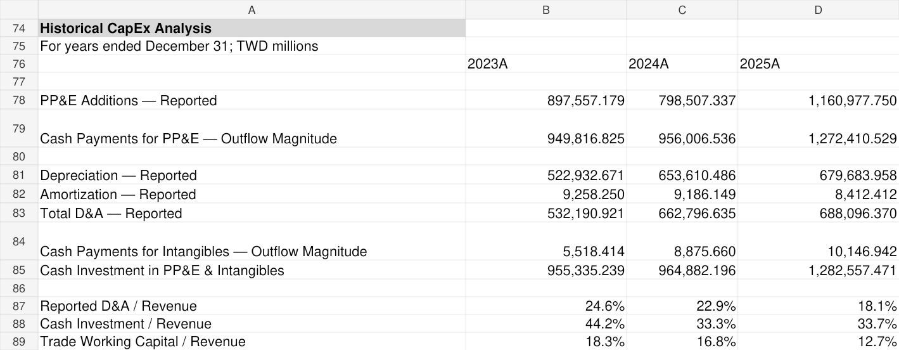
References: 2025 statements and 2024 statements. Detailed statement locations are recorded in the workbook source log.
Forecasting Growth and Its Capital Requirements
The operating forecast connects revenue growth to EBIT, operating taxes, depreciation and amortization, cash investment, and selected operating working capital.
EBITt = Revenuet × EBIT Margint
| Assumption | 2026E | 2027E | 2028E | 2029E | 2030E |
|---|---|---|---|---|---|
| Revenue growth | 30% | 24% | 20% | 15% | 10% |
| EBIT margin | 52% | 52% | 51% | 50% | 49% |
| Operating tax rate | 17.5% | 17.5% | 17.5% | 17.5% | 17.5% |
| D&A / revenue | 16.5% | 17% | 18% | 19% | 20% |
| Cash investment / revenue | 34.5% | 34% | 33% | 32% | 31% |
| Selected operating WC / revenue | 5% | 5% | 5% | 5% | 5% |
These are provisional model assumptions, not analyst consensus. Cash investment includes PP&E and intangible assets. New right-of-use asset investment is modeled separately at 0.2% of revenue annually.
The January 15, 2026 earnings call provides context for the initial forecast, including management’s expectation of approximately 30% revenue growth in US dollars. Applying 30% growth to a TWD model also assumes unchanged effective annual currency translation. The later growth rates and margin path remain model judgments.

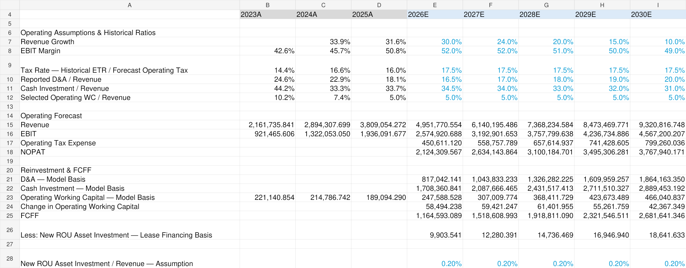
References: Q4 2025 earnings call, January 15, 2026; historical statements; separately identified model assumptions.
Moving from Operating Profit to FCFF
FCFF measures operating cash flow available to both debt and equity providers after operating reinvestment.
On this model’s lease basis:
− Cash Investment − ΔSelected Operating WC
− New ROU InvestmentCash investment includes PP&E and intangibles. Δ denotes the change in a balance.
D&A is added back because it is a noncash expense. Investment is deducted because building and maintaining productive capacity requires resources. An increase in operating working capital also absorbs cash.
The lease treatment matters: the model retains the ROU depreciation add-back, deducts new ROU investment, and includes lease liabilities in financing debt.
References: 2025 statements, cash-flow statement and lease notes; workbook reinvestment and lease assumptions.
Estimating WACC with Imperfect Inputs
Future cash flows require a discount rate reflecting the return demanded by capital providers.
The current cost-of-equity approach is:
The calculation uses a dated Taiwan government bond yield, estimated sovereign and country-risk adjustments, a US semiconductor industry beta, and an estimated corporate credit spread. Debt carrying values serve as market-value proxies.
These choices produce a WACC of approximately 8.01%. They do not establish a uniquely correct discount rate. Currency consistency, input timing, and comparability remain review items.
The forecast’s 17.5% operating-tax proxy and WACC’s 20% tax-shield proxy serve different purposes. Neither should be mistaken for a fully validated cash-tax forecast.

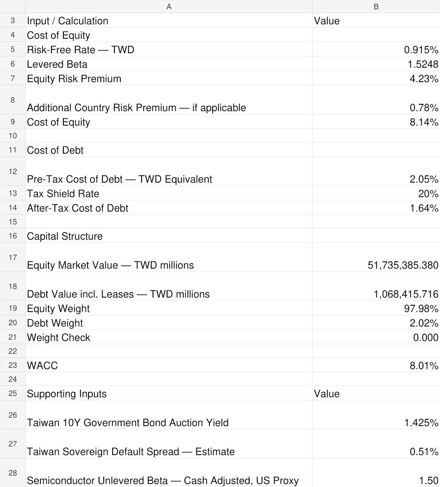
References: Taiwan bond auction; country-risk table; industry betas; credit spreads; TSMC debt disclosures. Live sources were checked on October 18, 2026; no archived dataset copy is bundled.
From Future Cash Flows to Common Equity Value
The model discounts the remaining forecast cash flows from the historical valuation date. It prorates 2026 FCFF using remaining calendar days and applies a year-end cash-flow convention.
Terminal cash flow uses a reinvestment relationship:
Terminal FCFF = Terminal NOPAT × (1 − g / ROIC)
Terminal Value = Terminal FCFF / (WACC − g)g = long-run nominal TWD growth; ROIC = terminal return on invested capital. WACC must exceed g. Terminal Value is measured at the end of 2030 and then discounted.
At 3% growth and 15% terminal ROIC, the implied reinvestment rate is 20%.
Operating enterprise value is then adjusted for cash, selected investments, debt, and other claims to estimate common equity value. Several adjustments use carrying-value proxies.

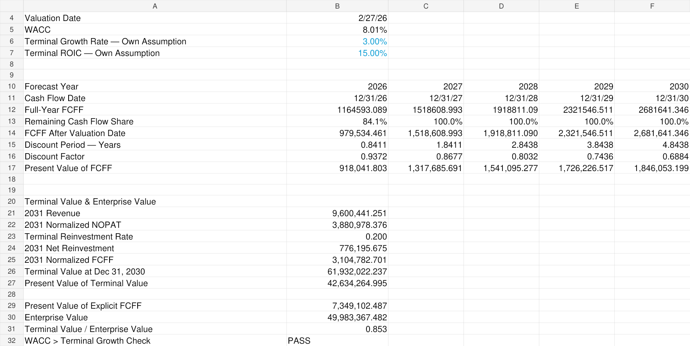

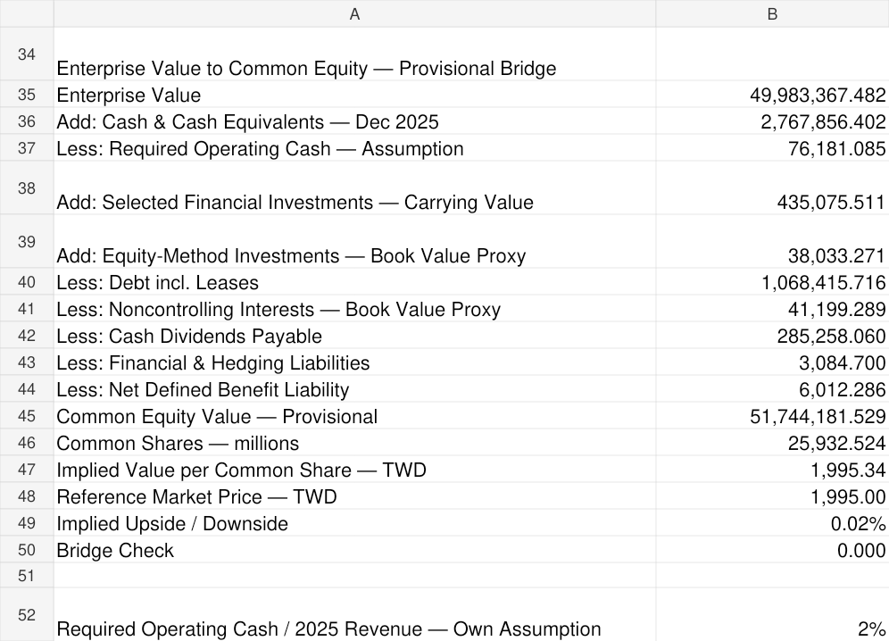

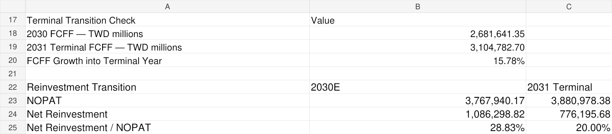
References: Workbook forecast and terminal assumptions; balance-sheet disclosures; reference share price.
Testing How Fragile the Answer Is
The sensitivity analysis varies WACC and terminal growth, while a separate table varies terminal ROIC.
The center of the WACC × growth matrix reconciles to the main DCF. Review also identified and corrected an audit formula that had assumed the base ROIC would always remain 15%. It now finds the matching ROIC row. The ROIC sensitivity formula also received a WACC-versus-growth validity guard.
In a temporary review copy, reducing terminal ROIC from 15% to 12.5% lowered implied value from approximately TWD 1,995.34 to TWD 1,913.14 per share.

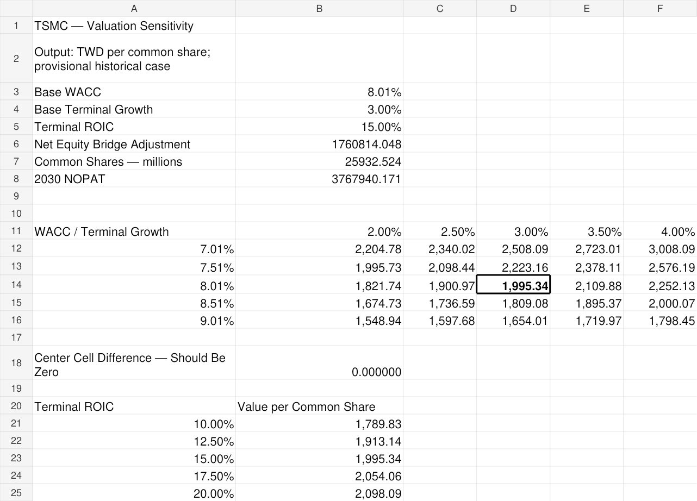
From the learning process: reviewing the audit formula
The correction addressed a formula supplied during the guided modeling process. It is recorded here as a review finding, rather than attributed to me as a mistake I independently introduced.

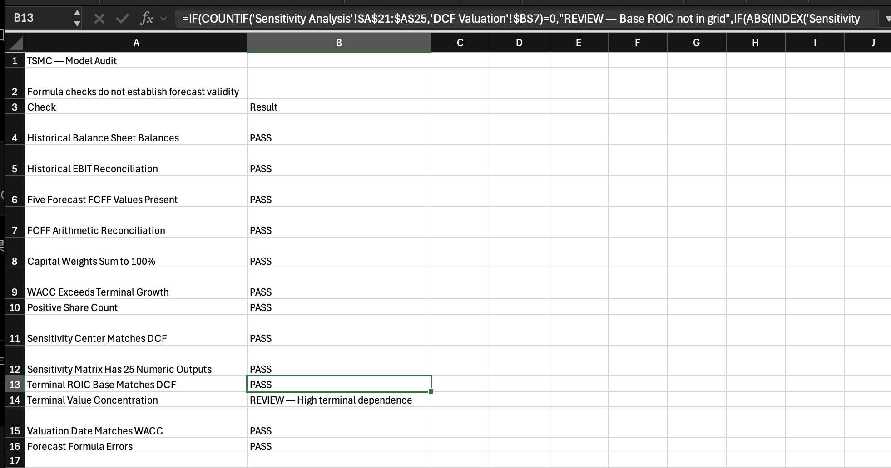
References: Formula-driven workbook sensitivities and documented review tests. These grids are conditional outputs, not probability estimates or complete Bull/Base/Bear scenarios.
Challenging My Initial Impression
My initial impression was that TSMC looked inexpensive relative to its growth. I have not yet established that conclusion.
The next research stage will examine:
- Demand durability: what evidence supports sustained AI-related demand, and how should it be distinguished from broader HPC demand?
- Capital requirements: how much investment is necessary to deliver the forecast growth?
- Margin conversion: how could fab ramp-up, depreciation, utilization, and overseas production affect operating profitability?
- Market expectations: what growth and cash-generation assumptions would justify the observed share price?
- Disconfirming evidence: which developments would require lower growth, lower margins, or greater reinvestment?
Possible evidence against an optimistic case includes sustained customer spending reductions, underutilized capacity, or investment requirements exceeding the model’s assumptions. These are hypotheses to test, not findings already established by Version 1.
Evidence boundary: reported history comes from financial statements; management outlook is a separate source; forecast ratios are model assumptions. Version 1 does not contain a consensus comparison, an AI revenue decomposition, or a reverse DCF.
What I Got Wrong or Haven’t Solved Yet
| Issue | Why it matters | Current status | Planned improvement |
|---|---|---|---|
| Terminal transition | Abrupt reinvestment normalization increases terminal cash flow | Open | Validate the steady-state assumptions and transition |
| Equity bridge timing | December 2025 balances are not February 2026 balances | Open | Complete an interim roll-forward |
| Operating WC scope | Excluded operating accounts may affect cash generation | Open | Review classifications and cash-flow impact |
| WACC proxies | Dated and industry inputs may misrepresent risk | Open | Validate timing, comparability, and methodology |
| Investment and NCI values | Carrying values may differ from economic values | Open | Review valuation adjustments |
| Shares and dilution | Year-end issued shares may differ from the appropriate valuation denominator | Open | Verify share count and potential dilution |
| Scenario analysis | One operating path does not capture alternative outcomes | Not built | Develop Bull, Base, and Bear assumptions |
The terminal value represents approximately 85.3% of enterprise value. That makes long-term assumptions particularly consequential.

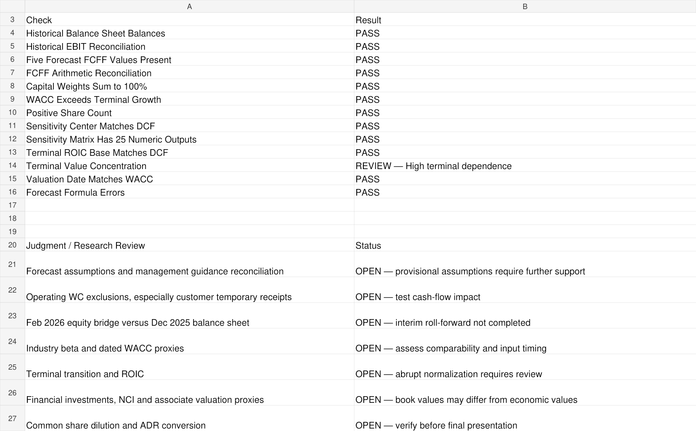
Documentation issue retained in V1: an earlier source-log note at Assumptions & Sources!B90 still says date verification is pending. Later entries document the historical cutoff. This wording needs alignment; the separate equity-bridge roll-forward remains genuinely incomplete.
Explore the Workbook
The public copy keeps the working model’s formulas and saved results. Author and modifier email metadata has been removed; the public byline remains Eva Zhang. No external workbook links, macros, embedded objects or data connections were found in the inspected file. Public source hyperlinks remain.
The PDF is a static viewing copy. The XLSX is editable after download. GitHub Pages does not make downloaded Excel files permanently read-only. Financial assumptions and OPEN issues remain provisional.
Images on this page open at full size. Workbook renderings are labeled separately from original Mac Excel screenshots. Read the public-copy notes.
Preview the static model PDF
References
Source links checked on October 18, 2026. The workbook source log records cell mappings, source units, conversions and model judgments. A source being accessible does not validate the model’s interpretation of it.
- TSMC 2025 Consolidated Financial Statements ↗Year ended December 31, 2025; includes 2024 comparatives. Balance sheet: PDF p.7 / printed p.6; income statement: PDF p.8 / printed p.7; cash flows: PDF pp.11–12 / printed pp.10–11. Historical inputs and equity-bridge notes are mapped in the workbook. Accessed October 18, 2026.
- TSMC 2024 Consolidated Financial Statements ↗Year ended December 31, 2024; used for 2023 comparative data. Income statement: PDF p.8 / printed p.7. Refer to the workbook for balance-sheet and cash-flow item locations. Accessed October 18, 2026.
- TSMC Q4 2025 Earnings-Call Transcript ↗January 15, 2026; management outlook discussion, PDF pp.4–6. Management’s USD growth outlook is not identical to a TWD growth assumption. Accessed October 18, 2026.
- Taiwan National Treasury Administration: 10-year bond auction ↗Auction February 5, 2026; release February 6; page updated February 25. Highest accepted yield 1.425%, distinct from the 1.375% coupon. Dated proxy, not a February 27 secondary-market quote. Accessed October 18, 2026.
- Aswath Damodaran: Country Risk Premiums ↗January 2026 table: Taiwan default spread 0.51%, country risk premium 0.78%, total ERP 5.01%; mature-market ERP 4.23%. The table is a live source, not an immutable archived file. Accessed October 18, 2026.
- Aswath Damodaran: Betas by Sector (US) ↗January 2026; Semiconductor row, 66 firms. Cash-adjusted unlevered beta 1.50. Industry proxy, not a TSMC regression beta or a pure foundry peer set. Accessed October 18, 2026.
- Aswath Damodaran: Ratings, Coverage Ratios and Default Spreads ↗January 2026, large nonfinancial firms. AA spread 0.55% and A+ spread 0.70%; the model’s AA- spread of 0.625% is its own interpolation, not a directly observed TSMC bond spread. Accessed October 18, 2026.
- Central News Agency / PhotoTaiwan: TSMC below TWD 2,000 ↗February 26, 2026 reference-price source recorded in the model: TWD 1,995. Secondary reporting; an exchange-level historical-price reconciliation remains an improvement item. Accessed October 18, 2026.
- Finviz: TSM historical quote-page observation ↗Retrieved page displayed August 13, 2026, a 19.80× Forward P/E, US$430.49 price and US$21.74 next-year EPS. This dynamic third-party page may change. It illustrates the research motivation; it is not a February valuation input or a current quote. Accessed October 18, 2026.
Historical WACC tables currently display the relevant January 2026 figures; this release does not bundle archived source datasets. Their suitability, timing and risk interpretation remain OPEN. More detailed input provenance is retained in the workbook.
An Evolving Research Project
Version 1.0 — Initial DCF Framework
October 18, 2026 · Workbook internal version v01Completed: historical financial extracts, operating forecast, FCFF, WACC, DCF valuation, sensitivity analysis, formula checks, and a limitations register.
Known limitations: terminal transition, equity bridge timing, working-capital coverage, valuation proxies, share-count verification, and incomplete operating scenarios.
Review fixes: ROIC audit now matches the selected base ROIC; ROIC sensitivity includes a WACC-versus-growth validity guard. A public copy removes personal email metadata without changing the calculations.
I plan to publish Version 2.0 within one week, focusing on model validation, valuation assumptions, and scenario analysis.
Version 2.0 — Planned
Target: October 25, 2026 · Not completedThe next version will focus on resolving or better quantifying those issues, adding Bull/Base/Bear scenarios, and documenting how each change affects the valuation. Earlier versions will remain identifiable so readers can follow the development.
This is a student research and financial-modeling project. Its provisional outputs are not investment advice or a current price target. I hold SMH, which gives me indirect exposure to TSMC.
Have a modeling lesson or research suggestion? Leave a thought in the existing advice corner →